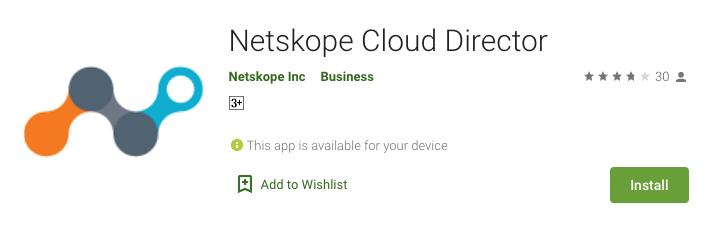
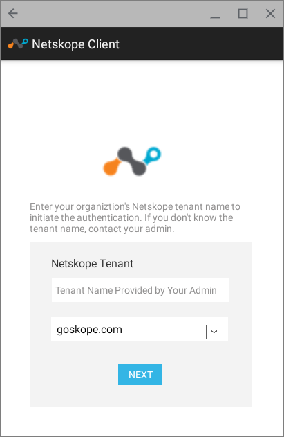
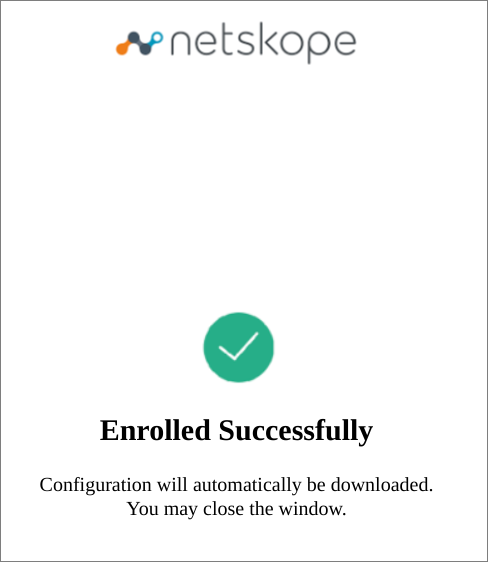
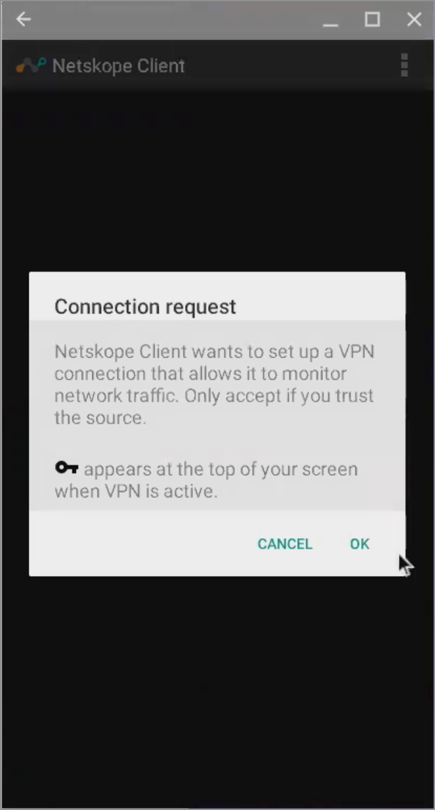
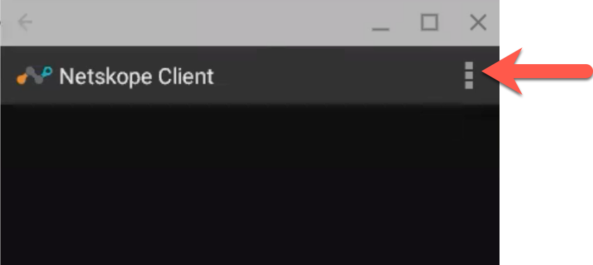
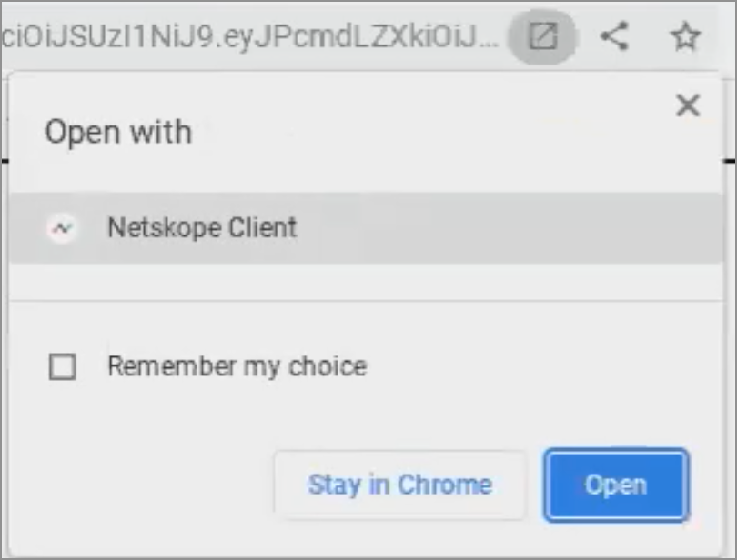

Deploy Netskope Client via IdP
You can enroll a user authenticated by an SAML 2.0 supported IdP service. After installing the Netskope Client (using Email invite or a supported MDM deployment tool ), users follow the enroll process in the Netskope Client UI to authenticate themselves via the organization's IdP / SSO service. On successful authentication, the Netskope Client verifies and enrolls the user.
Note
IdP enrollment is available for clients installed in the following end-user environments
-
Windows and macOS - requires Client ver 68 or later.
-
Android and ChromeOS - required Client ver 94 or later.
Prerequisites to using IdP for Client Deployment
-
All users must be authenticated via the IdP and imported into your Netskope tenant. The email address of the user must be available for all IdP authenticated users.
-
Configure your IdP in the Settings > > SAML (under the Forward Proxy section ) in your Netskope Tenant UI. See SAML Forward Proxy for details.
-
Ensure that the URL
nsauth-<tenantname>.goskope.comis publicly accessible. If not, please reach out to Netskope Support. -
End user devices must support Android AppLink feature. If the end-user devices (older than 2018 models) do not support AppLink then the user will need to manually select the Netskope App, when the Open With... dialog box is shown. See Enrollment on Devices without AppLink Support section for illustration.
-
Use the
IDPmode parameter when installing the client.-
On Windows
-
Single-user mode:
msiexec /I NSClient.msi installmode=IDP tenant=<tenant-name> domain=<domain> -
Multi-user mode:
msiexec /I NSClient.msi installmode=IDP mode=peruserconfig tenant=<tenant-name> domain=<domain>
-
-
On MacOS
Note
Configure the JAMF script. The initial three parameters are JAMF specific. For IDP mode specify the parameters are follows:
-
4th Param: idp
-
5th Param: domain (If your domain is example.goskope.com, enter example.goskope.com.
-
6th Param: Tenant name. Enter the full tenant name.
-
7th Param: 1 (to request users email). This is an optional parameter used for requesting user's email address during IDP deployment. requestEmail=[0 | 1]. Enter 1 to request user's email.
-
Single-user mode:
./jamfnsclientconfig.sh <jamf param 1> <jamf param 2> < jamf param 3> idp <domain> <tenant> <l> -
Multi-user mode:
./jamfnsclientconfig.sh <jamf param 1> <jamf param 2> <jamf param 3> idp <domain> <tenant> <1> peruserconfig
-
-
Enrollment Workflow
The following procedure illustrate the typical enrollment workflow.
-
The user clicks the Enroll button in the Netskope Client UI. This launches a pop-up window.
-
If the client was installed in IdP mode with tenant and domain suffix, the user enters only their email ID in the enroll pop-up window.
Note
If the client was installed without the tenant details, the user must enter the following details in the enroll pop-up window:
-
Email ID - Use the full email Id, username@domain.com or provide the email ID parameter - $(EMAIL_ID)
-
Tenant Name - For example: example.goskope.com. Enter the full URL (FQDN).
-
Select Home Pop Domain. The user can contact their Tenant admin for the name of the Home Pop Domain. This is the addon host name.
-
-
The Netskope Client redirects the user to the IdP authentication process. On successful IdP authentication, the user is enrolled.
Enrollment Workflow in ChromeOS and Android Devices
The following steps illustrate the client deployment and enrollment workflow in ChromeOS and Android devices.
Note
We recommend that you consider the following notes before proceeding with deployment:
-
ChromeOS and Android device support is available from release 94 or later.
-
End-user devices must support Android AppLink feature for auto enrollment process.
-
Netskope recommends the use of Google Admin console or your MDM tool for deploying CA certificates. See Traffic Steering > Explicit Proxy > Traffic Steering from Chromebooks for more information.
-
In the steering configuration, ensure that you specify the appropriate exceptions actions for Android and ChromeOS
-
Visit the Google Play Store and download Netskope Cloud Director.
 -
Install Netskope Cloud Director. After the installation is complete, a pop-up is displayed to the user to enter the tenant name and select the tenant domain as shared with the user by their respective IT.
 -
Click Next to continue with enrollment. User is redirected to their IdP login screen. Authentication status message is displayed in the browser.
 -
Once the user enrollment is complete, the Client will initiate configuration download and establish tunnel.
 -
After the Client is connected, user can click the mobile menu icon (3 vertical dots in the top right corner of the client) for options to view configuration details.

Enrollment on Devices without AppLink Support
If you have a ChromeOS device that does not support the Android AppLink feature, then you must manually select the Client app for the enrollment process.
After the Client (Netskope Cloud Director app) is successfully installed and the dP authentication is successful, the user must manually open the Client app to receive the Netskope tenant authentication token to continue with the enrollment process. In the disambiguation popup (see the following screenshot), click the Open button and also ensure that you select the Remember my choice option.
|  |
Unenrollment
A user can unenroll themselves by clicking the Unenroll button in the Netskope Client UI. To prevent users from unenrolling, you can disable the Unenroll option in the Netskope client UI.
Note
ChromeOS users will need to uninstall the app to Unenroll.
-
Login to your Netskope tenant UI and goto Setting > > Devices.
-
Click Client Configurations. In the list of configuration options, disable the Allow users to unenroll option.